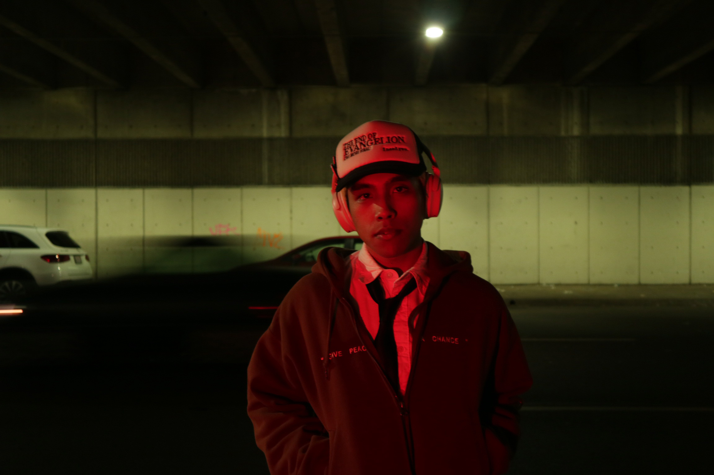

I was born in Vegas but raised in San Diego and grew up loving basketball, hip hop, tech, and Minecraft. Growing up I never really knew what I wanted to do as a career but went into college as a compsci major because of my love for tech. While attending college I lost motivation and took a year and a half break to work and learn coding on my own. After a while, I came back and decided to pursue graphic design as I found way more enjoyment in designing websites than coding them. Today, I’m more happy with my position in school and still learning coding to hopefully get into UI/UX Design.
I am planning to graduate in Spring 2027.
After graduation I plan to work in UI/UX Design and continue learning more about web development.
My favorite class was ART 342A and ART 344 both of my professors were very helpful and made the class enjoyable.
I am most proud of producing projects in my design classes that share my passion for culture and design